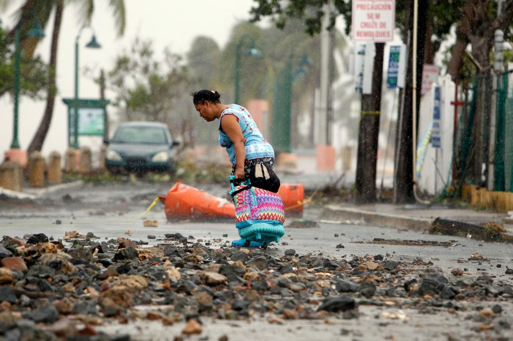

Huracán Irma
El huracán Irma azotó Puerto Rico con fuertes lluvias y poderosos vientos, dejando a más de 900.000 personas sin servicio de electricidad mientras las autoridades luchaban por llevar ayuda a las pequeñas islas del Caribe que ya fueron devastadas por la histórica tormenta.
Su ojo pasó a 90 Km al noreste de Puerto Rico, pero sus vientos huracanados alcanzaron la isla con rachas de más de 200 km/hora.
Más de la mitad de la isla de Puerto Rico se quedó sin electricidad, y hay más de 50.000 personas sin agua, indicó la agencia de manejo de emergencias de la isla. En total, 14 hospitales utilizaban generadores después de quedarse sin luz, y varios caminos quedaron obstaculizados por la caída de árboles y postes.

